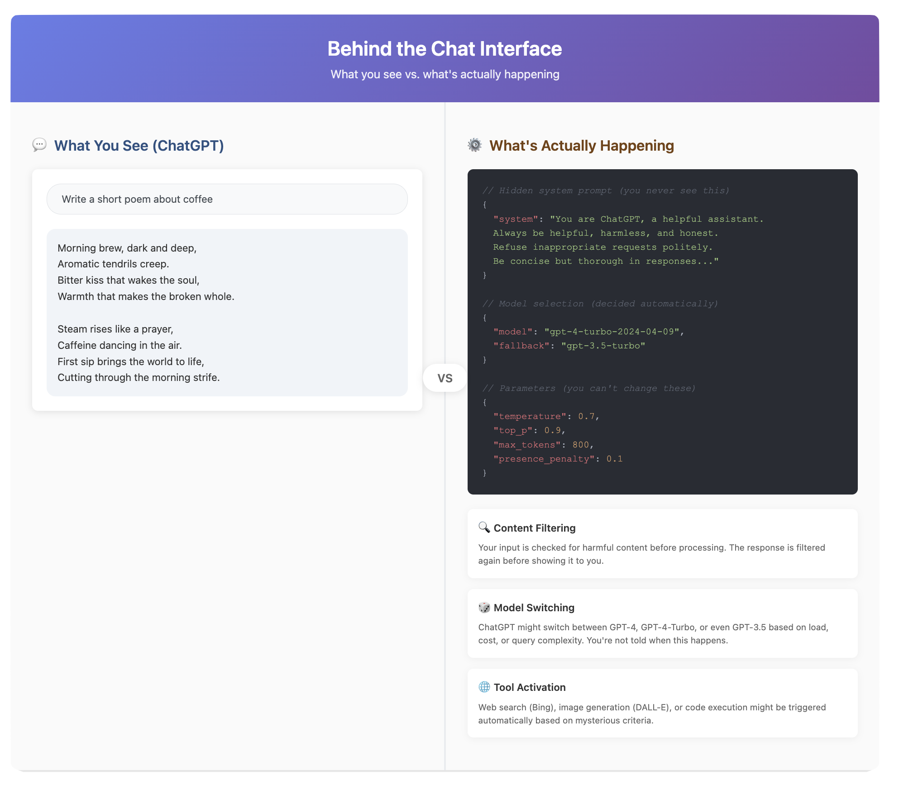
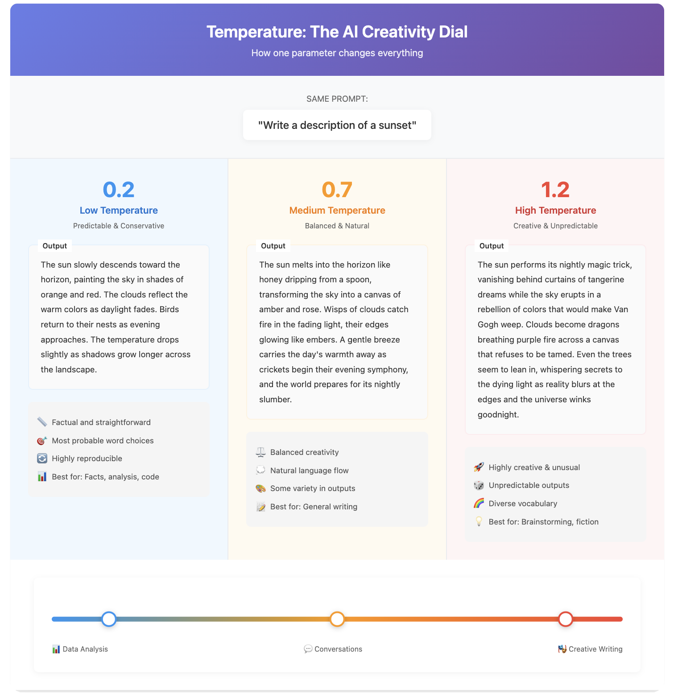

Chapter 4: Interaction & Output Control – Driving the AI
Beyond the Chat Box
Let's be honest: you probably started your AI journey with ChatGPT, Claude, or Gemini. You typed something in a box, hit enter, and magic happened. When it worked well, you were amazed. When it gave you garbage, you shrugged and tried again.
These apps are like automatic transmission cars – smooth, convenient, and they hide all the complicated stuff. That's great for getting started, but terrible for understanding what's actually happening or getting consistent results.
This chapter is about looking under the hood. Not because you need to become a mechanic, but because understanding the controls gives you power. It's the difference between hoping for good results and knowing how to get them.
The Convenience Trap
ChatGPT, Claude.ai, and Gemini are marvels of user experience. They've packaged incredibly complex technology into something your grandma can use. But that packaging hides crucial details:
- Which model version are you actually talking to? (They switch it without telling you)
- What invisible instructions is it following? (Every app adds hidden "system prompts")
- How is it deciding to search the web or analyze your file?
- What safety filters are altering its responses?
- Why does the same prompt give different results at different times?
It's like driving a car where the steering wheel sometimes controls the wheels, sometimes the radio, and you're never quite sure which. Frustrating when you need precision.
How You Really Talk to AI: APIs
Behind every chat interface is an API (Application Programming Interface). Think of it as AI's phone number – a direct line that bypasses all the packaging.
When you use an API, you're in control:
- You choose the exact model
- You set all the parameters
- You see exactly what goes in and what comes out
- You pay for what you use, not a monthly subscription
- No invisible middleman changing things
It's like the difference between ordering through a waiter (who might interpret your order) and walking directly into the kitchen to talk to the chef.
The Price of Control: APIs require a bit more technical setup. You need an API key (like a password), and you typically interact through code or specialized tools. But the payoff is enormous – consistent, predictable results.
The Art of Asking: Prompt Engineering
"Prompt engineering" sounds fancy, but it's really just learning to communicate clearly with something that takes you very literally. It's like talking to a brilliant but extremely literal foreign exchange student.
Zero-Shot: Just Ask
This is what most people do – throw a question at the AI and hope:
- "Write me a cover letter"
- "Explain quantum physics"
- "Fix this code"
Sometimes it works great. Sometimes it's completely off base. You're rolling the dice.
Few-Shot: Show, Don't Just Tell
This is where things get interesting. Instead of just asking, you provide examples:
"Convert these city names to country codes:
- New York -> US
- London -> UK
- Tokyo -> JP
Now do: Paris ->"
The AI sees the pattern and follows it. It's like teaching by demonstration rather than explanation. Suddenly, your success rate jumps from 60% to 95%.
The Advanced Techniques That Actually Matter
Chain-of-Thought (CoT):
Add "Let's think step by step" or "Show your reasoning" to complex questions. It forces the AI to work through problems methodically instead of jumping to conclusions. It's like the difference between a student guessing an answer and showing their work.
Role Playing:
"You are an experienced Python developer reviewing junior code" works better than "check this code." It activates relevant patterns in the model's training. But don't go overboard – "You are the world's greatest genius" doesn't actually make it smarter.
Structure Templates:
Instead of free-form requests, provide clear structure: - "Analyze this text for: 1) Main argument 2) Supporting evidence 3) Potential weaknesses"
System Prompts: The Invisible Hand
Every chat app has hidden system prompts that shape the AI's personality and behavior. ChatGPT might have something like: "You are a helpful, harmless, honest assistant. Never generate harmful content. Be concise but thorough..."
When you use APIs, YOU write these rules. Want an AI that's more creative? More cautious? More technical? You control it all. It's like the difference between buying a pre-seasoned meal and seasoning it yourself.
The Control Panel: Output Parameters
Remember those hidden controls in chat apps? Here's what's actually happening:
Temperature: The Creativity Dial
Temperature controls randomness in responses:
- Low (0.1-0.3): Predictable, focused, "by the book" – great for facts, analysis, code
- Medium (0.5-0.7): Balanced – good for general tasks
- High (0.8-1.0+): Creative, surprising, sometimes wild – great for brainstorming, fiction
ChatGPT probably runs around 0.7-0.8. But what if you need 0.1 precision for financial analysis? Too bad – you can't change it. With APIs, you can.
Top-P: The Vocabulary Filter
While temperature affects how wild the AI gets, Top-P affects how many different words it considers. Lower values make it stick to common, safe choices. Higher values let it explore unusual words and phrases.
Max Length: The Brake Pedal
Chat apps decide how long responses should be. Sometimes you want a paragraph and get an essay. Sometimes you need detail and get a summary. With direct control, you set exact limits.
Stop Sequences: The Emergency Brake
These are phrases that make the AI immediately stop generating. Useful for structured outputs or preventing rambling. Chat apps use these invisibly – you might want different ones.
The Context Window: AI's Working Memory
Every model has a context window – how much text it can "see" at once. It includes:
- Your system prompt
- The conversation history
- The current question
- The response it's generating
Think of it as the AI's desk. Once it's full, older stuff falls off. This is why ChatGPT sometimes "forgets" things from earlier in long conversations.
Chat apps manage this automatically (often badly). When you have control, you can:
- Prioritize what stays in memory
- Summarize old content to save space
- Reset strategically to maintain performance
The Reality Check
Here's what chat apps don't want you to know: they're making dozens of decisions for you every time you hit enter. Usually, those decisions are fine. But when you need specific results, "usually fine" isn't good enough.
It's like Instagram filters versus professional photo editing. Filters are convenient and often look great. But when you need specific results, you need actual controls.
When to Graduate from Chat Apps
Stay with chat apps when:
- You're exploring and learning
- Casual use is fine
- Inconsistency doesn't matter
- You don't want technical complexity
Move beyond them when:
- You need consistent, reliable results
- You're building something that depends on AI
- Cost matters (APIs are often cheaper for heavy use)
- You need specific behaviors or outputs
- Privacy and control are crucial
The Path Forward
Don't feel bad about using ChatGPT – it's an amazing tool. But recognize it for what it is: training wheels. Useful for learning to ride, limiting when you want to really move.
Understanding these controls – APIs, prompting, parameters, context – isn't about becoming a tech wizard. It's about graduating from hoping AI does what you want to knowing how to make it do what you need.
In the next chapter, we'll explore how to break AI's biggest limitation: its inability to access current information or take action in the real world. Get ready to give your AI superpowers.
Visuals
License
© 2025 Uli Hitzel This book is released under the Creative Commons Attribution–NonCommercial 4.0 International license (CC BY-NC 4.0). You may copy, distribute, and adapt the material for any non-commercial purpose, provided you give appropriate credit, include a link to the license, and indicate if changes were made. For commercial uses, please contact the author.